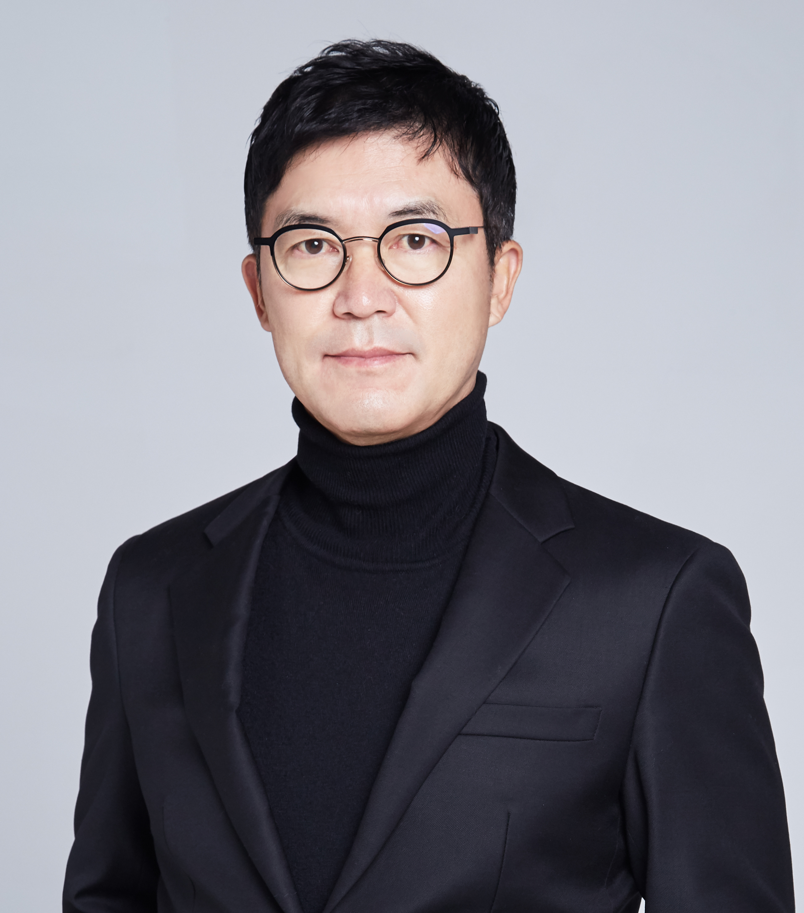

Home
/
Professor
Principal Investigator
Professor
Head of Laboratory
PI

강용태 교수
Prof. Yong Tae Kang, Ph.D.
소속
고려대학교 공과대학 기계공학부
직위
정교수
연구실
에너지물질순환연구실 (EMCL)
오피스
Innovation Hall 309
이메일
ytkang@korea.ac.kr
Research Interests · 연구 관심 분야
■
Thermal Engineering
■
Heat & Mass Transfer
■
CO₂ capture and separation
■
Thermophysical Properties
■
Air-conditioning and Refrigeration
Education · 학력
1990.09–1994.09
The Ohio State University, USA - 공학박사
1987.03–1989.02
서울대학교 대학원 기계공학과 - 공학석사
1983.03–1987.02
서울대학교 공과대학 기계공학과 - 공학사
Career · 주요 경력
2021.08–2023.07
고려대학교 기계공학부 학부장
2020.07–Present
플러스에너지빌딩 혁신기술 연구센터(ERC) - 센터장
2017.08–2019.12
BK21 Plus 창의적미래융합기계시스템인력양성사업단 - 단장
2017.08–2019.12
고려대학교 대학원 기계공학과 - 주임
2017.03–Present
고려대학교 연구기획위원회 - 연구단장(기계, 제조)
2014.03–Present
고려대학교 기계공학과 - 정교수
2012.03–2014.02
경희대학교 대학원 - 부원장
2006.09–2007.08
MIT 기계공학과 방문교수 (Prof. G. Chen Lab.)
2000.03–2014.02
경희대학교 공과대학 기계·산업시스템 공학부 조교수, 부교수, 정교수
1997.04–2000.02
일본 동경농공대 공학부 객원교수
1997.04–2000.02
일본과학기술진흥사업단 특별연구원
1997.01–1997.03
일본 동경농공대 공학부 - 강사
1994.10–1996.12
The Ohio State University, USA - 박사후 연구원겸 강사
1990.09–1994.09
The Ohio State University, USA - 연구조교
1989.06–1989.06
국비유학생 선발
1989.03–1989.12
서울대학교 공과대학 생산기술연구소 - 위촉연구원
Professional Activity · 학회 활동
2023.01–Present
한국공학한림원 정회원
2022.03–2022.12
대한기계설비단체총연합회 - 회장
2022.01–2022.12
대한설비공학회 - 회장
2021.06–Present
AUTSE, Fellow 선정
2021.03–Present
국제냉동기구 한국위원회 - 회장
2021.01–2021.12
대한설비공학회 - 차기회장
2020.01–2022.12
한국공학한림원 일반회원
2019.11–Present
SAREK, Fellow 선정
2019.01–2019.12
대한기계학회 열공학부문 회장
2019.01–Present
과학기술한림원 정회원
2018.01–2019.12
대한설비공학회 - 대외협력위원회 위원장
2018.01–Present
International Journal of Air-conditioning and Refrigeration Editor-in-Chief
2018.01–2018.12
대한설비공학회 - 부회장
2013.01–2013.12
대한기계학회 열공학부문 - 수석 부회장
2012.01–2020.01
Journal of Mechanical Science and Technology - Editor
2011.03–2021.02
국제냉동기구 한국위원회 - 부회장
2011.03–2018.09
International Institution of Refrigeration - B Commision, President
Social Activity · 대외 활동
2025.07–2026.07
서울특별시 건설기술심의의원회 - 제7기 설계심의분과위원
2025.03–2026.03
LH한국토지주택공사 - 제17기 설계심의분과위원
2025.01–2026.12
SH경기주택도시공사 - 제5기 제안서평가위원
2024.04–2025.04
한국환경공단 - 제13기 기술자문설계심의분과위원
2024.03–2026.03
조달청 기술자문위원
2024.03–2026.02
국토교통부 중앙건설기술심의위원회 - 제18기 중앙건설기술심의위원
2024.03–2025.03
LH한국토지주택공사 - 제16기 기술심사평가위원
2023.03–2024.02
LH한국토지주택공사 - 제15기 기술심사평가위원
2022.12–2023.11
서울특별시 제5기 건설기술심의위원회 설계심의분과위원
2022.03–2024.02
국토교통부 중앙건설기술심의위원회 - 제17기 중앙건설기술심의위원
2022.01–2023.02
LH한국토지주택공사 - 제14기 기술심사평가위원
2021.12–2023.12
서울주택도시공사 - 제17기 건설기술 자문위원
2021.05–2023.05
LH한국토지주택공사 - 제1기 LH 공공주택 자문단 자문위원
2020.03–2021.02
국토교통부 중앙건설기술심의위원회 - 제10기 설계심의분과위원
2020.03–2021.02
LH한국토지주택공사 - 제12기 LH건설사업관리 기술심사평가위원
2019.09–2022.08
한국환경공단 - 기술자문위원/민자사업 평가위원
2019.01–2019.12
국토교통부 중앙건설기술심의위원회 - 제9기 설계심의분과위원
2018.01–2018.12
한국환경공단 - 설계심의분과위원
2018.01–2018.12
경기도 - 설계심의분과위원
2013.01–2013.12
조달청 설계심의분과위원
2012.01–2013.01
한국환경공단 - 설계심의분과위원
2011.09–2011.12
충청북도 건설기술심의위원
2010.01–2012.12
경기도 - 설계심의분과위원
2008.04–2010.03
인천광역시 - 설계기술심의위원
Academic Award · 수상
2024.07
국토교통부 장관표창
2022.05
고려대학교 석탑강의상
2021.06
대한설비공학회 우수논문상
2020.12
대한기계학회 학술상
2020.06
국토교통부 우수논문 장관상
2020.04
고려대학교 우수강의상
2018.11
산업통상자원부 장관표창
2017.05
고려대학교 석탑연구상
2015.12
ASAREK, JSRAE, CAR AAA (Asian Academic Award)
2015.11
대한설비공학회 학술상
2012.11
대한기계학회 남헌학술상
2012.06
국토해양부 최우수논문 장관상
2010.12
경희대학교 경희 fellow 선정
2006.11
한국과학기술총연합 제16회 과학기술 우수논문상
2005.06
대한설비공학회 우수논문상
2004.06
대한설비공학회 우수논문상
2004.06
프런티어사업단 우수논문상
2002.06
대한설비공학회 우수논문상
2000.06
공기조화냉동공학회 우수논문상
2000.06
대한설비공학회 우수논문상